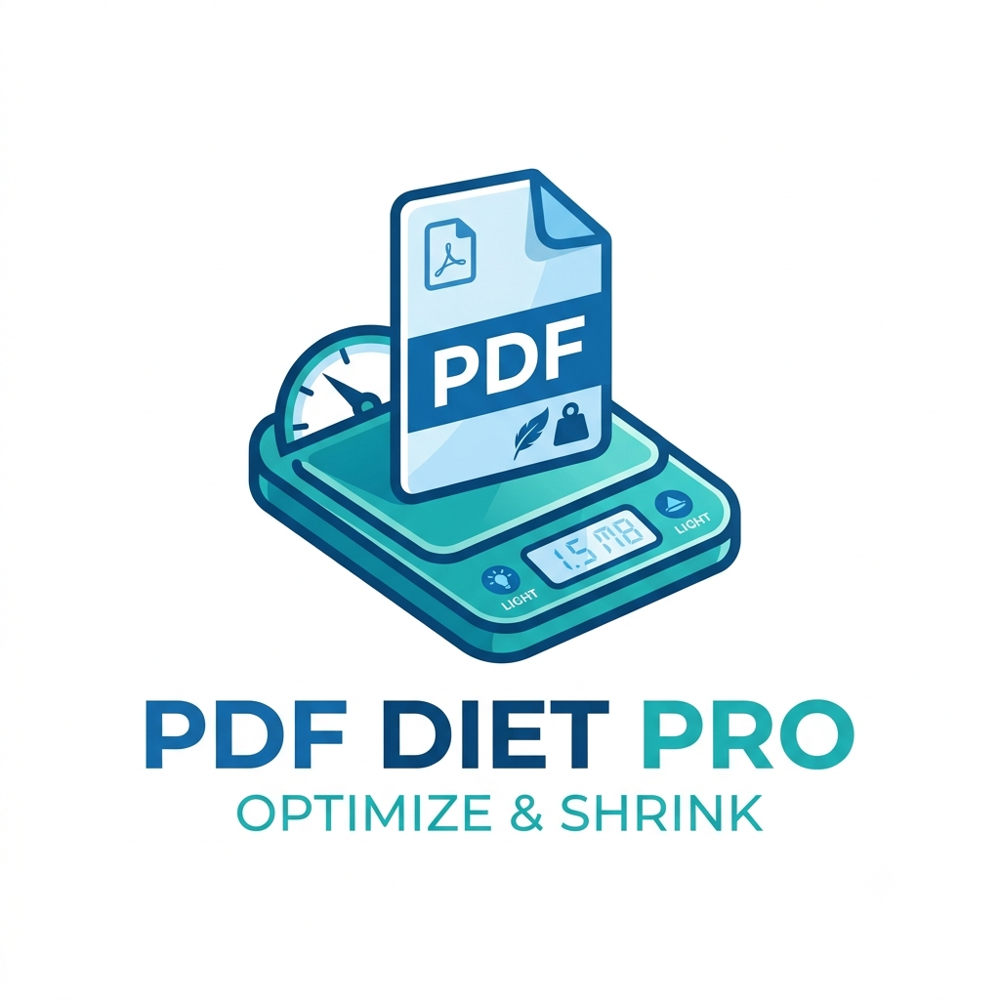

1 PDF 파일 선택
대기 중클릭하여 PDF를 선택하거나 이곳에 끌어다 놓으세요
파일을 올리면 실시간 예상 용량과 화질 비교 기능을 바로 활용할 수 있습니다
sample.pdf
0 MB
•
페이지 분석 중...
2 압축 엔진 선택 (3가지 방식)
주의: 페이지 전체 이미지화 모드를 사용하면 결과 PDF에서 텍스트 드래그(복사) 및 검색이 불가능해집니다.
원본 · 압축본 화질 비교 미리보기
선택한 1개 페이지를 현재 설정으로 빠르게 압축하여 원본과 압축본의 화질을 나란히 비교합니다.
예상 용량 및 압축 결과
실시간 예측원본 용량
-
예상 압축본
-
조건 변경 시 즉시
실제 압축결과
-
실행 후 확정
최종 절감된 용량
0% 감소

3 세부 압축 옵션 설정
고급 최적화 자동 적용 중
70% (권장)
최대 압축 (20%)
고화질 (95%)
150 DPI (웹/화면용)
파일을 업로드해 주세요
0%
원본 vs 압축본 화질 나란히 비교
선택한 페이지를 렌더링하여 글자 선명도와 이미지 화질 열화를 비교합니다
원본 (0 MB)
1 페이지 원본 화질
압축본 (예상 0 MB)
현재 설정 적용됨